library(tidyverse)8 Data Visualisation with ggplot2
- This episode is a broad overview of ggplot2 and focuses on (1) getting familiar with the layering system of ggplot2, (2) using the argument
groupin theaes()function, (3) basic customization of the plots. - The episode depends on data created in the Data Wrangling with tidyr episode. If you did not get to or through all of the tidyr episode, you can have the learners access the data by either downloading it or quickly creating it using the tidyr code below. You will probably want to copy the code into the Etherpad.
- If you did skip the tidyr episode, you might want to go over the exporting data section in that episode.
- Produce scatter plots, boxplots, and barplots using ggplot.
- Set universal plot settings.
- Describe what faceting is and apply faceting in ggplot.
- Modify the aesthetics of an existing ggplot plot (including axis labels and colour).
- Build complex and customized plots from data in a data frame.
- Recognize the differences between base R, lattice, and ggplot visualizations.
- What are the components of a ggplot?
- What are the main differences between R base plots, lattice, and ggplot?
- How do I create scatterplots, boxplots, and barplots?
- How can I change the aesthetics (ex. colour, transparency) of my plot?
- How can I create multiple plots at once?
We start by loading the required package. ggplot2 is also included in the tidyverse package.
If not still in the workspace, load the data we saved in the previous lesson.
interviews_plotting <- read_csv("data_output/interviews_plotting.csv")Rows: 131 Columns: 45
── Column specification ────────────────────────────────────────────────────────
Delimiter: ","
chr (5): village, respondent_wall_type, memb_assoc, affect_conflicts, inst...
dbl (8): key_ID, no_membrs, years_liv, rooms, liv_count, no_meals, number_...
lgl (31): bicycle, television, solar_panel, table, cow_cart, radio, cow_plo...
dttm (1): interview_date
ℹ Use `spec()` to retrieve the full column specification for this data.
ℹ Specify the column types or set `show_col_types = FALSE` to quiet this message.If you were unable to complete the previous lesson or did not save the data, then you can create it now. Either download it using read_csv() (Option 1) or create it with the dplyr and tidyr code (Option 2).
8.0.1 Option 1: Download the data
interviews_plotting <- read_csv("https://raw.githubusercontent.com/datacarpentry/r-socialsci/main/episodes/data/interviews_plotting.csv")8.0.2 Option 2: Create the data
## Can be used to load in data from previous lesson!
interviews_plotting <- interviews %>%
## pivot wider by items_owned
separate_longer_delim(items_owned, delim = ";") %>%
replace_na(list(items_owned = "no_listed_items")) %>%
## Use of grouped mutate to find number of rows
group_by(key_ID) %>%
mutate(items_owned_logical = TRUE,
number_items = if_else(items_owned == "no_listed_items", 0, n())) %>%
pivot_wider(names_from = items_owned,
values_from = items_owned_logical,
values_fill = list(items_owned_logical = FALSE)) %>%
## pivot wider by months_lack_food
separate_longer_delim(months_lack_food, delim = ";") %>%
mutate(months_lack_food_logical = TRUE,
number_months_lack_food = if_else(months_lack_food == "none", 0, n())) %>%
pivot_wider(names_from = months_lack_food,
values_from = months_lack_food_logical,
values_fill = list(months_lack_food_logical = FALSE))8.1 Visualization Options in R
Before we start with ggplot2, it’s helpful to know that there are several ways to create visualizations in R. While ggplot2 is great for building complex and highly customizable plots, there are simpler and quicker alternatives that you might encounter or use depending on the context. Let’s briefly explore a few of them:
8.1.1 R Base Plots
Base R plots are the simplest form of visualization and are great for quick, exploratory analysis. You can create plots with very little code, but customizing them can be cumbersome compared to ggplot2.
Example of a simple scatterplot in base R using the no_membrs and liv_count variables:
plot(interviews_plotting$no_membrs, interviews_plotting$liv_count,
main = "Base R Scatterplot",
xlab = "Number of Household Members",
ylab = "Number of Livestock Owned")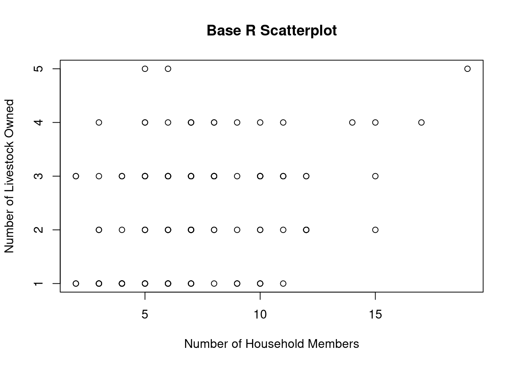
8.1.2 Lattice
Lattice is another plotting system in R, which allows for creating multi-panel plots easily. It’s different from ggplot2 because you define the entire plot in a single function call, and modifications after plotting are limited.
Example of a lattice plot using no_membrs and liv_count split by village:
library(lattice)xyplot(liv_count ~ no_membrs | village, data = interviews_plotting,
main = "Lattice Plot: Livestock Count by Household Members",
xlab = "Number of Household Members",
ylab = "Number of Livestock Owned")
8.2 Plotting with ggplot2
ggplot2 is a plotting package that makes it simple to create complex plots from data stored in a data frame. It provides a programmatic interface for specifying what variables to plot, how they are displayed, and general visual properties. Therefore, we only need minimal changes if the underlying data change or if we decide to change from a bar plot to a scatterplot. This helps in creating publication quality plots with minimal amounts of adjustments and tweaking.
ggplot2 functions work best with data in the ‘long’ format, i.e., a column for every dimension, and a row for every observation. Well-structured data will save you lots of time when making figures with ggplot2
ggplot graphics are built step by step by adding new elements. Adding layers in this fashion allows for extensive flexibility and customization of plots.
Each chart built with ggplot2 must include the following
Data
Aesthetic mapping (aes)
- Describes how variables are mapped onto graphical attributes
- Visual attribute of data including x-y axes, color, fill, shape, and alpha
Geometric objects (geom)
- Determines how values are rendered graphically, as bars (
geom_bar), scatterplot (geom_point), line (geom_line), etc.
- Determines how values are rendered graphically, as bars (
Thus, the template for graphic in ggplot2 is:
<DATA> %>%
ggplot(aes(<MAPPINGS>)) +
<GEOM_FUNCTION>()Remember from the last lesson that the pipe operator %>% places the result of the previous line(s) into the first argument of the function. ggplot is a function that expects a data frame to be the first argument. This allows for us to change from specifying the data = argument within the ggplot function and instead pipe the data into the function.
- use the
ggplot()function and bind the plot to a specific data frame.
interviews_plotting %>%
ggplot()- define a mapping (using the aesthetic (
aes) function), by selecting the variables to be plotted and specifying how to present them in the graph, e.g. as x/y positions or characteristics such as size, shape, color, etc.
interviews_plotting %>%
ggplot(aes(x = no_membrs, y = number_items))add ‘geoms’ – graphical representations of the data in the plot (points, lines, bars).
ggplot2offers many different geoms; we will use some common ones today, including:geom_point()for scatter plots, dot plots, etc.geom_boxplot()for, well, boxplots!geom_line()for trend lines, time series, etc.
To add a geom to the plot use the + operator. Because we have two continuous variables, let’s use geom_point() first:
interviews_plotting %>%
ggplot(aes(x = no_membrs, y = number_items)) +
geom_point()
The + in the ggplot2 package is particularly useful because it allows you to modify existing ggplot objects. This means you can easily set up plot templates and conveniently explore different types of plots, so the above plot can also be generated with code like this, similar to the “intermediate steps” approach in the previous lesson:
# Assign plot to a variable
interviews_plot <- interviews_plotting %>%
ggplot(aes(x = no_membrs, y = number_items))
# Draw the plot as a dot plot
interviews_plot +
geom_point()## This is the correct syntax for adding layers
interviews_plot +
geom_point()
## This will not add the new layer and will return an error message
interviews_plot
+ geom_point()8.3 Building your plots iteratively
Building plots with ggplot2 is typically an iterative process. We start by defining the dataset we’ll use, lay out the axes, and choose a geom:
interviews_plotting %>%
ggplot(aes(x = no_membrs, y = number_items)) +
geom_point()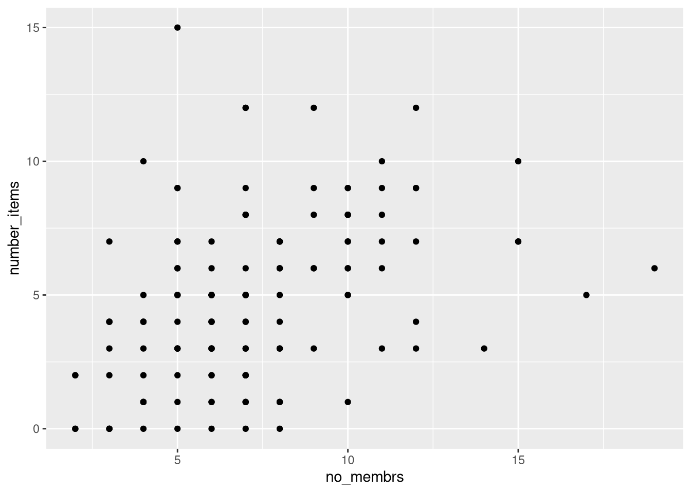
Then, we start modifying this plot to extract more information from it. For instance, when inspecting the plot we notice that points only appear at the intersection of whole numbers of no_membrs and number_items. Also, from a rough estimate, it looks like there are far fewer dots on the plot than there rows in our dataframe. This should lead us to believe that there may be multiple observations plotted on top of each other (e.g. three observations where no_membrs is 3 and number_items is 1).
There are two main ways to alleviate overplotting issues:
- changing the transparency of the points
- jittering the location of the points
Let’s first explore option 1, changing the transparency of the points. What we mean when we say “transparency” we mean the opacity of point, or your ability to see through the point. We can control the transparency of the points with the alpha argument to geom_point. Values of alpha range from 0 to 1, with lower values corresponding to more transparent colors (an alpha of 1 is the default value). Specifically, an alpha of 0.1, would make a point one-tenth as opaque as a normal point. Stated differently ten points stacked on top of each other would correspond to a normal point.
Here, we change the alpha to 0.5, in an attempt to help fix the overplotting. While the overplotting isn’t solved, adding transparency begins to address this problem, as the points where there are overlapping observations are darker (as opposed to lighter gray):
interviews_plotting %>%
ggplot(aes(x = no_membrs, y = number_items)) +
geom_point(alpha = 0.5)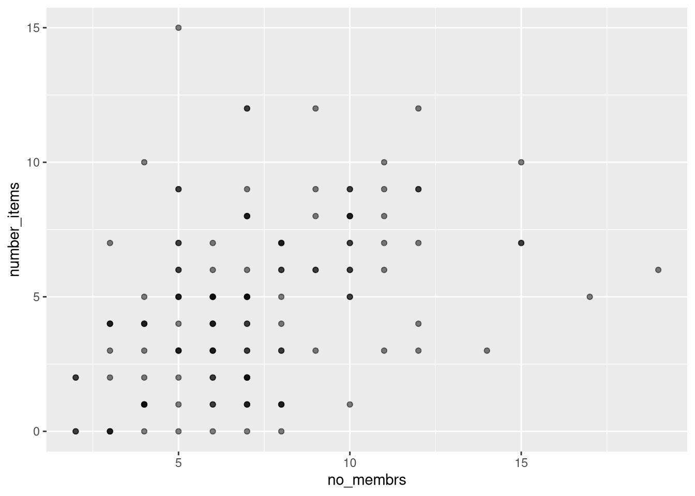
That only helped a little bit with the overplotting problem, so let’s try option two. We can jitter the points on the plot, so that we can see each point in the locations where there are overlapping points. Jittering introduces a little bit of randomness into the position of our points. You can think of this process as taking the overplotted graph and giving it a tiny shake. The points will move a little bit side-to-side and up-and-down, but their position from the original plot won’t dramatically change. Note that this solution is suitable for plotting integer figures, while for numeric figures with decimals, geom_jitter() becomes inappropriate because it obscures the true value of the observation.
We can jitter our points using the geom_jitter() function instead of the geom_point() function, as seen below:
interviews_plotting %>%
ggplot(aes(x = no_membrs, y = number_items)) +
geom_jitter()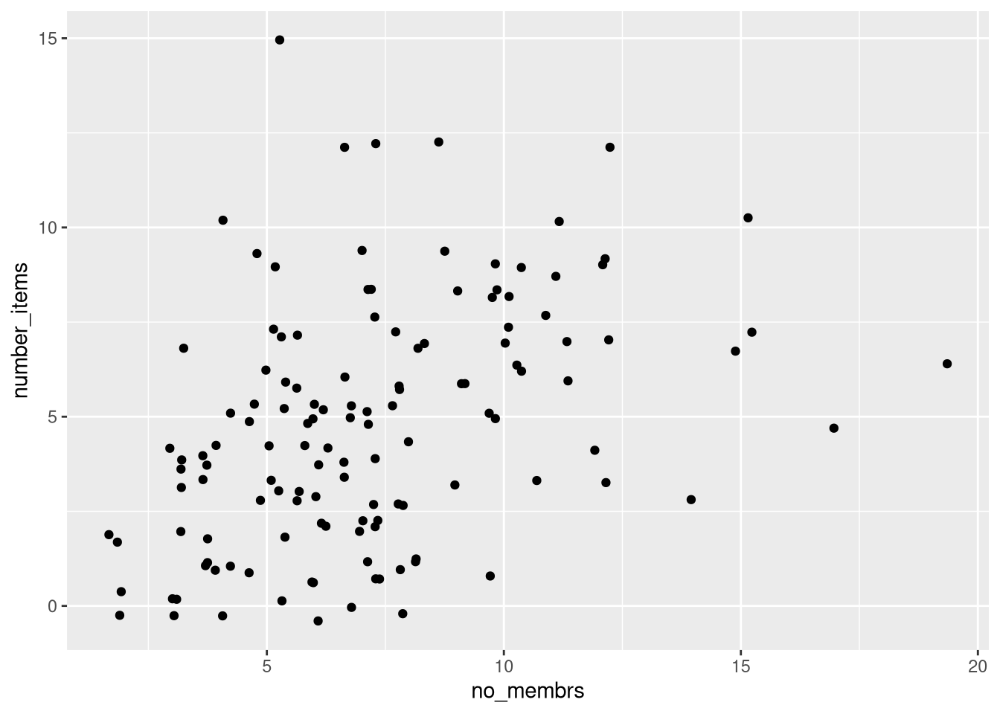
The geom_jitter() function allows for us to specify the amount of random motion in the jitter, using the width and height arguments. When we don’t specify values for width and height, geom_jitter() defaults to 40% of the resolution of the data (the smallest change that can be measured). Hence, if we would like less spread in our jitter than was default, we should pick values between 0.1 and 0.4. Experiment with the values to see how your plot changes.
interviews_plotting %>%
ggplot(aes(x = no_membrs, y = number_items)) +
geom_jitter(alpha = 0.5,
width = 0.2,
height = 0.2)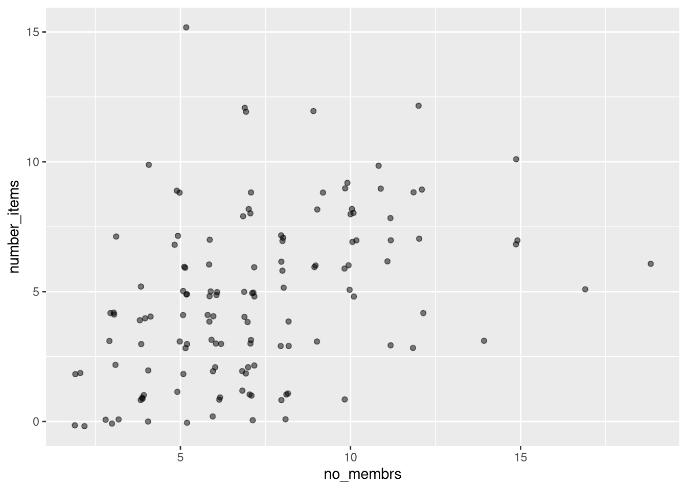
For our final change, we can also add colours for all the points by specifying a color argument inside the geom_jitter() function:
interviews_plotting %>%
ggplot(aes(x = no_membrs, y = number_items)) +
geom_jitter(alpha = 0.5,
color = "blue",
width = 0.2,
height = 0.2)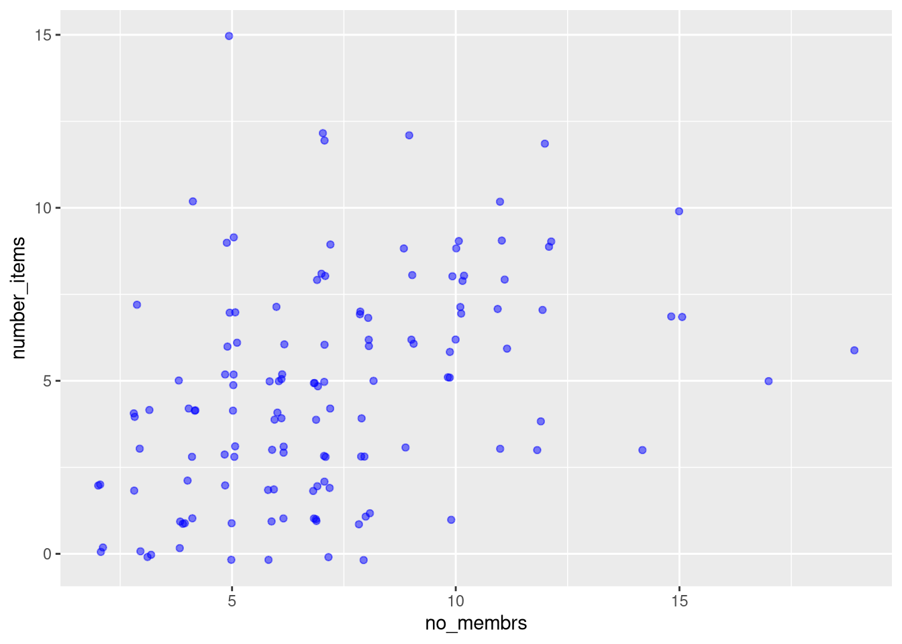
To colour each village in the plot differently, you could use a vector as an input to the argument color. However, because we are now mapping features of the data to a colour, instead of setting one colour for all points, the colour of the points now needs to be set inside a call to the aes function. When we map a variable in our data to the colour of the points, ggplot2 will provide a different colour corresponding to the different values of the variable. We will continue to specify the value of alpha, width, and height outside of the aes function because we are using the same value for every point. ggplot2 understands both the Commonwealth English and American English spellings for colour, i.e., you can use either color or colour. Here is an example where we color points by the village of the observation:
interviews_plotting %>%
ggplot(aes(x = no_membrs, y = number_items)) +
geom_jitter(aes(color = village), alpha = 0.5, width = 0.2, height = 0.2)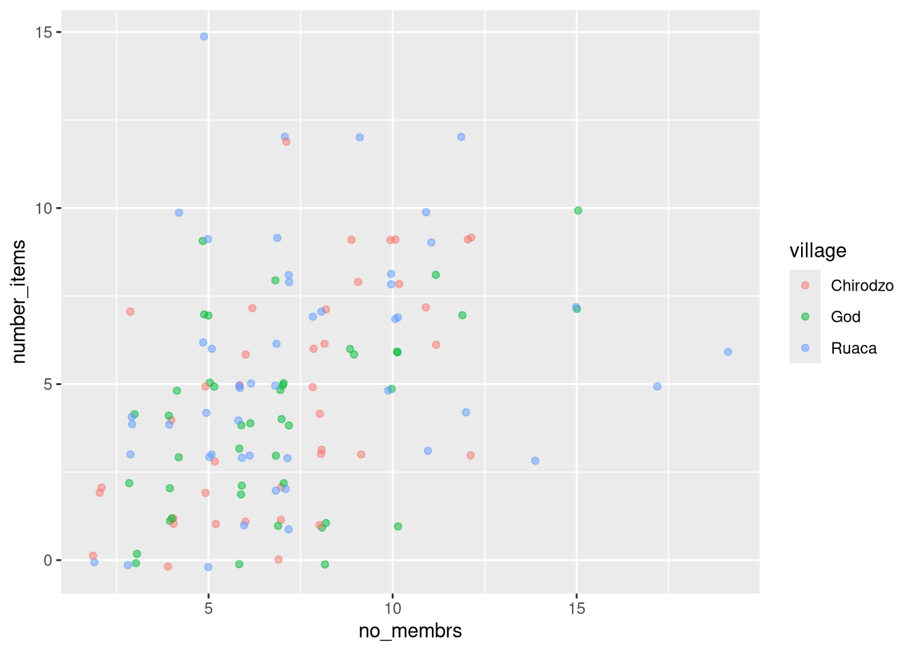
There appears to be a positive trend between number of household members and number of items owned (from the list provided). Additionally, this trend does not appear to be different by village.
8.4 Exercise
Use what you just learned to create a scatter plot of rooms by village with the respondent_wall_type showing in different colours. Does this seem like a good way to display the relationship between these variables? What other kinds of plots might you use to show this type of data?
Solution (Solution).
interviews_plotting %>%
ggplot(aes(x = village, y = rooms)) +
geom_jitter(aes(color = respondent_wall_type),
alpha = 0.5,
width = 0.2,
height = 0.2)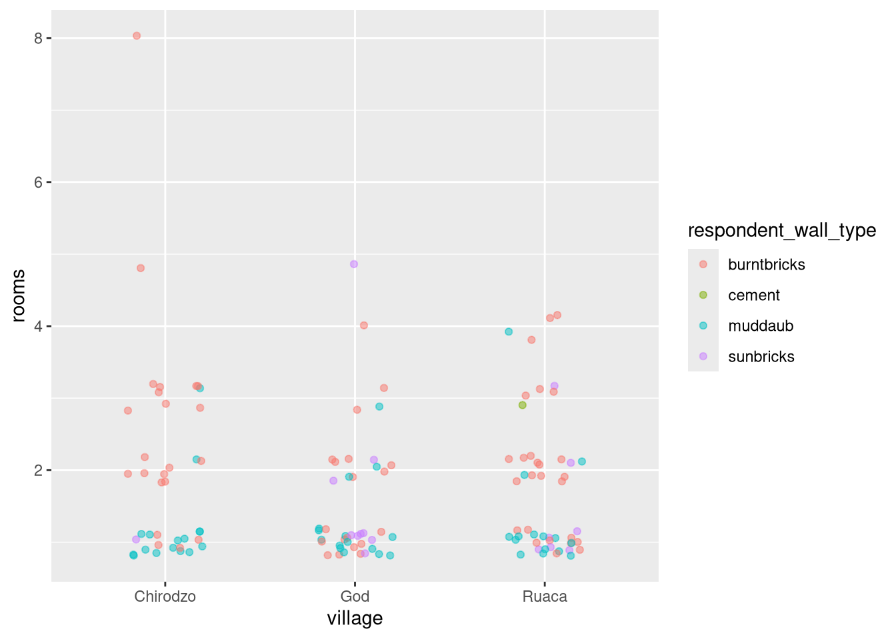
This is not a great way to show this type of data because it is difficult to distinguish between villages. What other plot types could help you visualize this relationship better?
8.5 Boxplot
We can use boxplots to visualize the distribution of rooms for each wall type:
interviews_plotting %>%
ggplot(aes(x = respondent_wall_type, y = rooms)) +
geom_boxplot()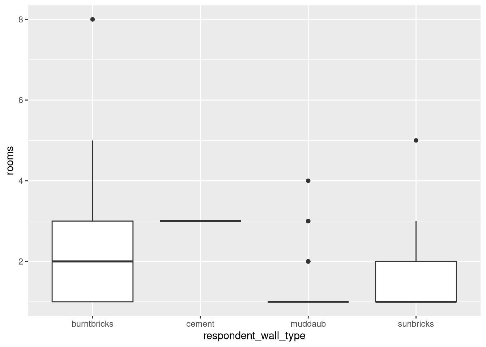
By adding points to a boxplot, we can have a better idea of the number of measurements and of their distribution:
interviews_plotting %>%
ggplot(aes(x = respondent_wall_type, y = rooms)) +
geom_boxplot(alpha = 0) +
geom_jitter(alpha = 0.5,
color = "tomato",
width = 0.2,
height = 0.2)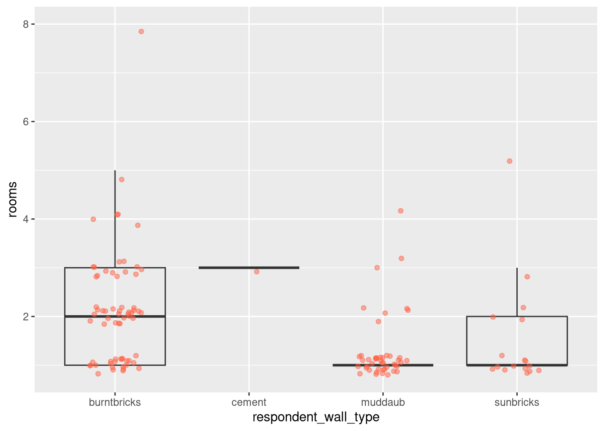
We can see that muddaub houses and sunbrick houses tend to be smaller than burntbrick houses.
Notice how the boxplot layer is behind the jitter layer? What do you need to change in the code to put the boxplot layer in front of the jitter layer?
8.6 Exercise
Boxplots are useful summaries, but hide the shape of the distribution. For example, if the distribution is bimodal, we would not see it in a boxplot. An alternative to the boxplot is the violin plot, where the shape (of the density of points) is drawn.
- Replace the box plot with a violin plot; see
geom_violin().
Solution (Solution).
interviews_plotting %>%
ggplot(aes(x = respondent_wall_type, y = rooms)) +
geom_violin(alpha = 0) +
geom_jitter(alpha = 0.5, color = "tomato")Warning: Groups with fewer than two datapoints have been dropped.
ℹ Set `drop = FALSE` to consider such groups for position adjustment purposes.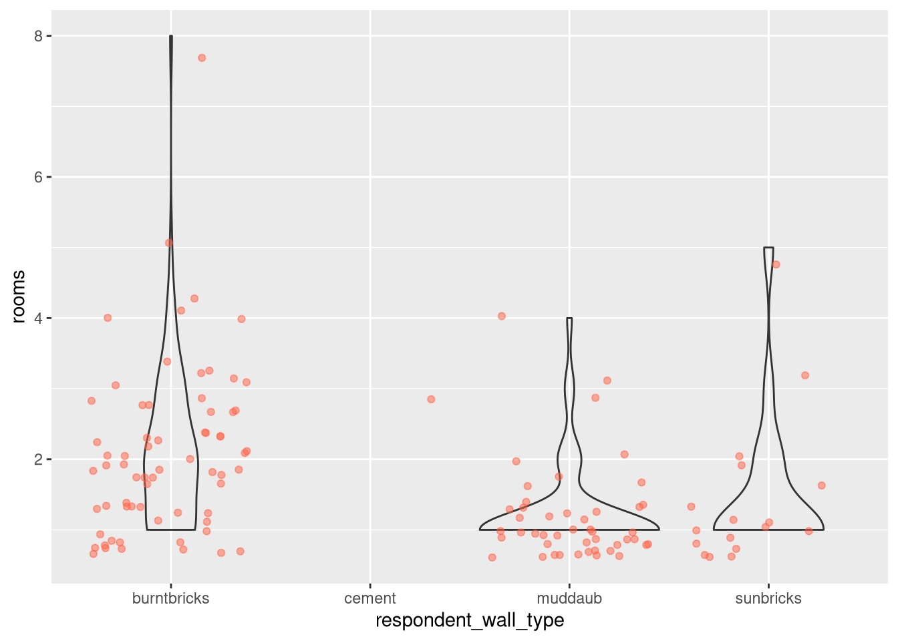
So far, we’ve looked at the distribution of room number within wall type. Try making a new plot to explore the distribution of another variable within wall type.
- Create a boxplot for
liv_countfor each wall type. Overlay the boxplot layer on a jitter layer to show actual measurements.
Solution (Solution).
interviews_plotting %>%
ggplot(aes(x = respondent_wall_type, y = liv_count)) +
geom_boxplot(alpha = 0) +
geom_jitter(alpha = 0.5, width = 0.2, height = 0.2)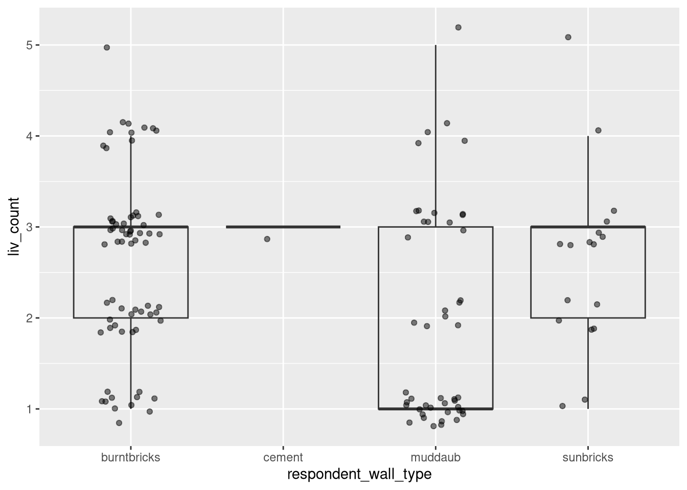
- Add colour to the data points on your boxplot according to whether the respondent is a member of an irrigation association (
memb_assoc).
Solution (Solution).
interviews_plotting %>%
ggplot(aes(x = respondent_wall_type, y = liv_count)) +
geom_boxplot(alpha = 0) +
geom_jitter(aes(color = memb_assoc), alpha = 0.5, width = 0.2, height = 0.2)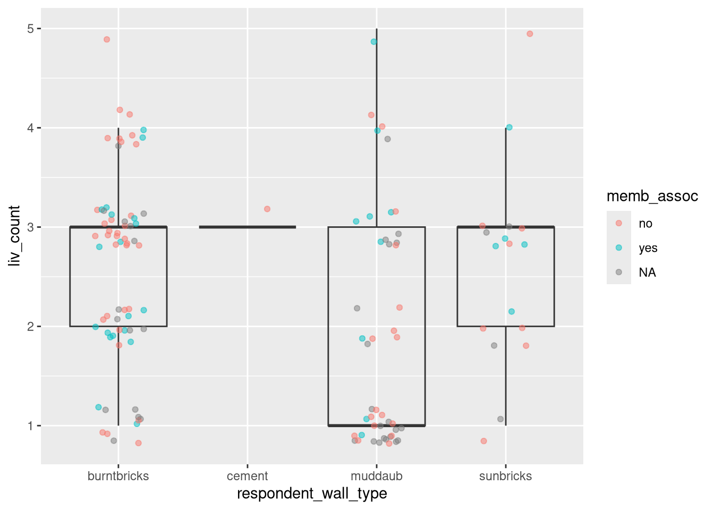
8.7 Barplots
Barplots are also useful for visualizing categorical data. By default, geom_bar accepts a variable for x, and plots the number of instances each value of x (in this case, wall type) appears in the dataset.
interviews_plotting %>%
ggplot(aes(x = respondent_wall_type)) +
geom_bar()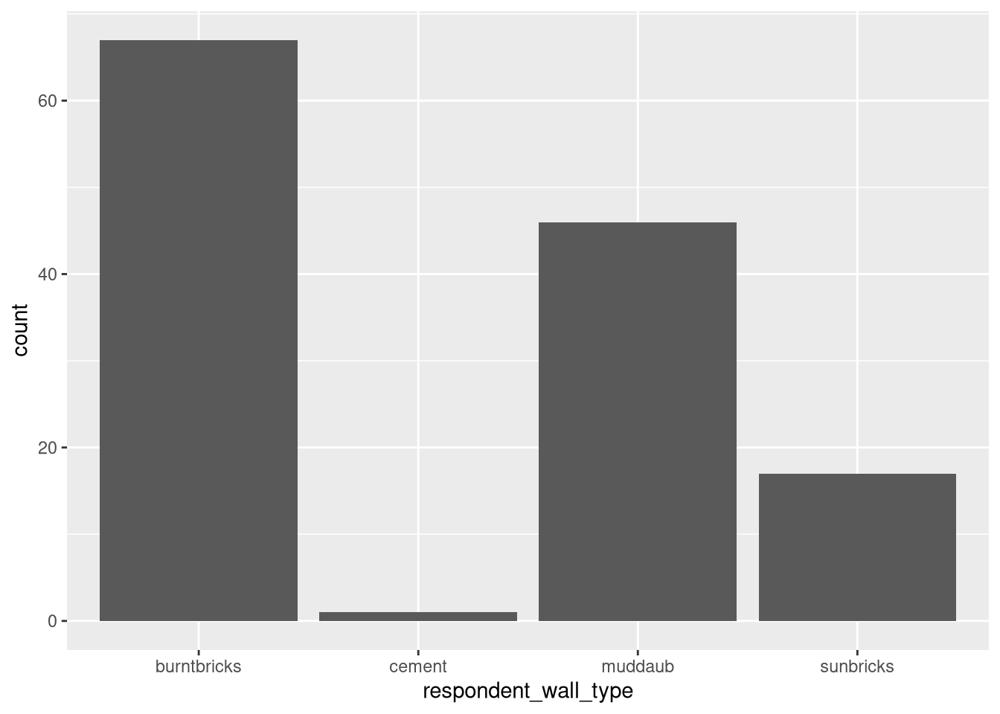
We can use the fill aesthetic for the geom_bar() geom to colour bars by the portion of each count that is from each village.
interviews_plotting %>%
ggplot(aes(x = respondent_wall_type)) +
geom_bar(aes(fill = village))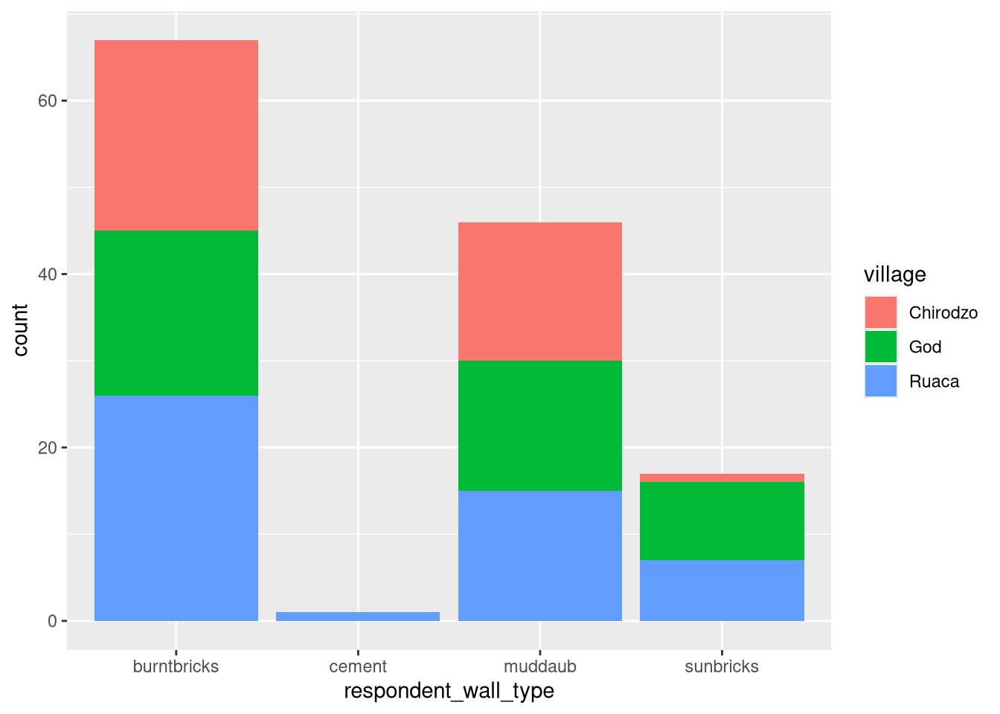
This creates a stacked bar chart. These are generally more difficult to read than side-by-side bars. We can separate the portions of the stacked bar that correspond to each village and put them side-by-side by using the position argument for geom_bar() and setting it to “dodge”.
interviews_plotting %>%
ggplot(aes(x = respondent_wall_type)) +
geom_bar(aes(fill = village), position = "dodge")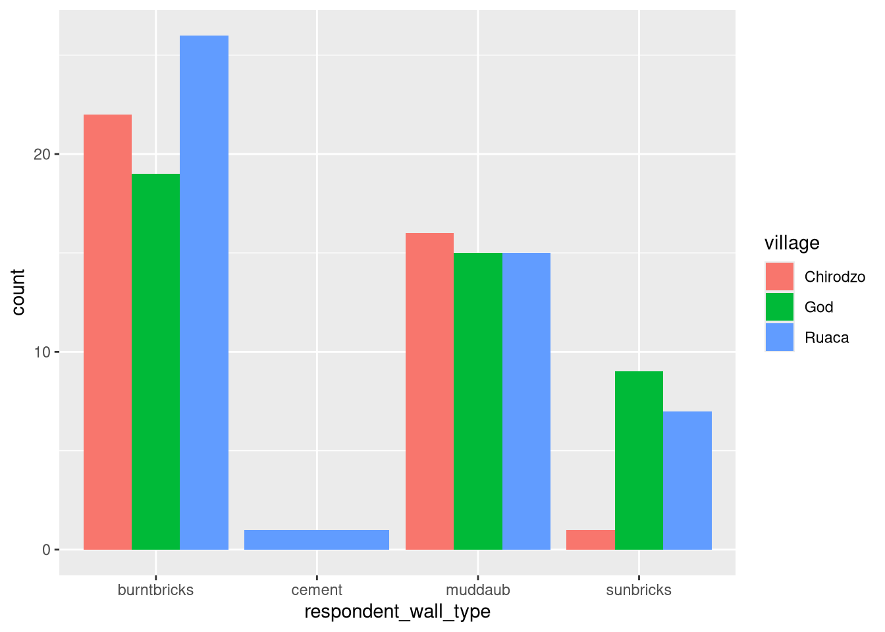
This is a nicer graphic, but we’re more likely to be interested in the proportion of each housing type in each village than in the actual count of number of houses of each type (because we might have sampled different numbers of households in each village). To compare proportions, we will first create a new data frame (percent_wall_type) with a new column named “percent” representing the percent of each house type in each village. We will remove houses with cement walls, as there was only one in the dataset.
percent_wall_type <- interviews_plotting %>%
filter(respondent_wall_type != "cement") %>%
count(village, respondent_wall_type) %>%
group_by(village) %>%
mutate(percent = (n / sum(n)) * 100) %>%
ungroup()Now we can use this new data frame to create our plot showing the percentage of each house type in each village.
percent_wall_type %>%
ggplot(aes(x = village, y = percent, fill = respondent_wall_type)) +
geom_bar(stat = "identity", position = "dodge")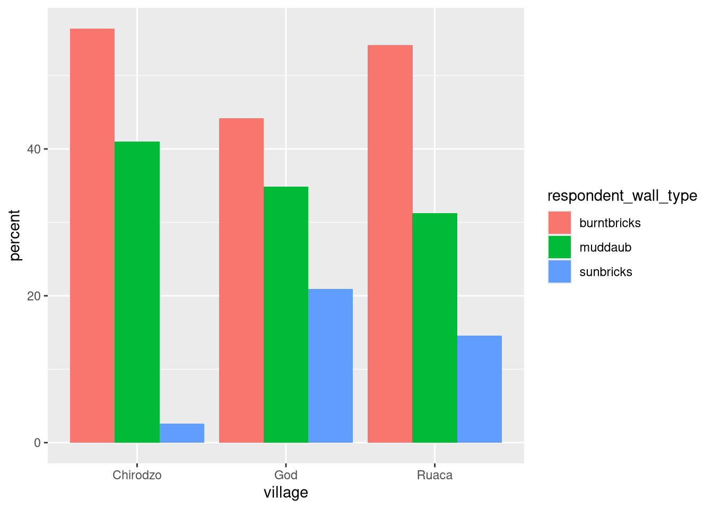
8.8 Exercise
Create a bar plot showing the proportion of respondents in each village who are or are not part of an irrigation association (memb_assoc). Include only respondents who answered that question in the calculations and plot. Which village had the lowest proportion of respondents in an irrigation association?
Solution (Solution).
percent_memb_assoc <- interviews_plotting %>%
filter(!is.na(memb_assoc)) %>%
count(village, memb_assoc) %>%
group_by(village) %>%
mutate(percent = (n / sum(n)) * 100) %>%
ungroup()
percent_memb_assoc %>%
ggplot(aes(x = village, y = percent, fill = memb_assoc)) +
geom_bar(stat = "identity", position = "dodge")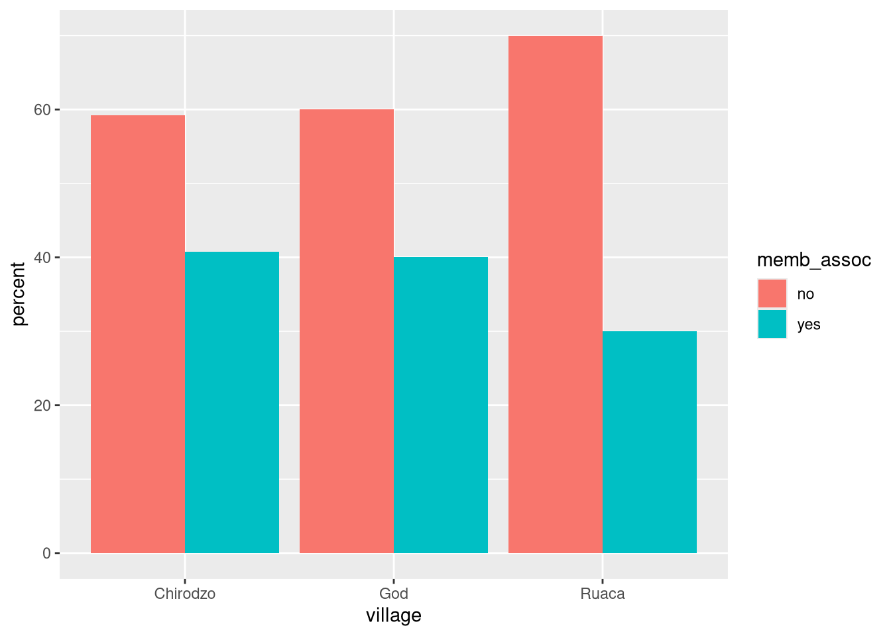
Ruaca had the lowest proportion of members in an irrigation association.
8.9 Adding Labels and Titles
By default, the axes labels on a plot are determined by the name of the variable being plotted. However, ggplot2 offers lots of customization options, like specifying the axes labels, and adding a title to the plot with relatively few lines of code. We will add more informative x-and y-axis labels to our plot, a more explanatory label to the legend, and a plot title.
The labs function takes the following arguments:
title– to produce a plot titlesubtitle– to produce a plot subtitle (smaller text placed beneath the title)caption– a caption for the plot...– any pair of name and value for aesthetics used in the plot (e.g.,x,y,fill,color,size)
percent_wall_type %>%
ggplot(aes(x = village, y = percent, fill = respondent_wall_type)) +
geom_bar(stat = "identity", position = "dodge") +
labs(title = "Proportion of wall type by village",
fill = "Type of Wall in Home",
x = "Village",
y = "Percent")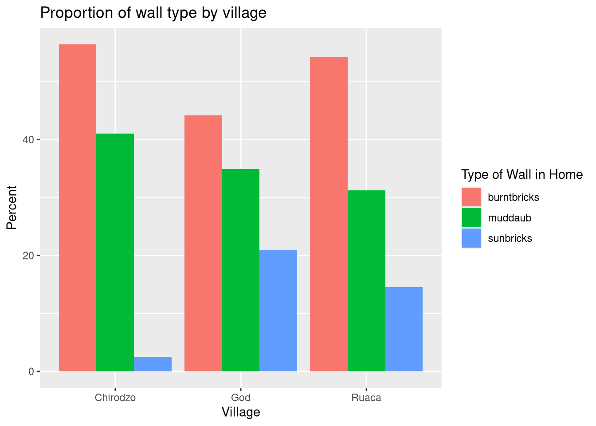
8.10 Faceting
Rather than creating a single plot with side-by-side bars for each village, we may want to create multiple plot, where each plot shows the data for a single village. This would be especially useful if we had a large number of villages that we had sampled, as a large number of side-by-side bars will become more difficult to read.
ggplot2 has a special technique called faceting that allows the user to split one plot into multiple plots based on a factor included in the dataset. We will use it to split our barplot of housing type proportion by village so that each village has its own panel in a multi-panel plot:
percent_wall_type %>%
ggplot(aes(x = respondent_wall_type, y = percent)) +
geom_bar(stat = "identity", position = "dodge") +
labs(title="Proportion of wall type by village",
x="Wall Type",
y="Percent") +
facet_wrap(~ village)
Click the “Zoom” button in your RStudio plots pane to view a larger version of this plot.
Usually plots with white background look more readable when printed. We can set the background to white using the function theme_bw(). Additionally, you can remove the grid:
percent_wall_type %>%
ggplot(aes(x = respondent_wall_type, y = percent)) +
geom_bar(stat = "identity", position = "dodge") +
labs(title="Proportion of wall type by village",
x="Wall Type",
y="Percent") +
facet_wrap(~ village) +
theme_bw() +
theme(panel.grid = element_blank())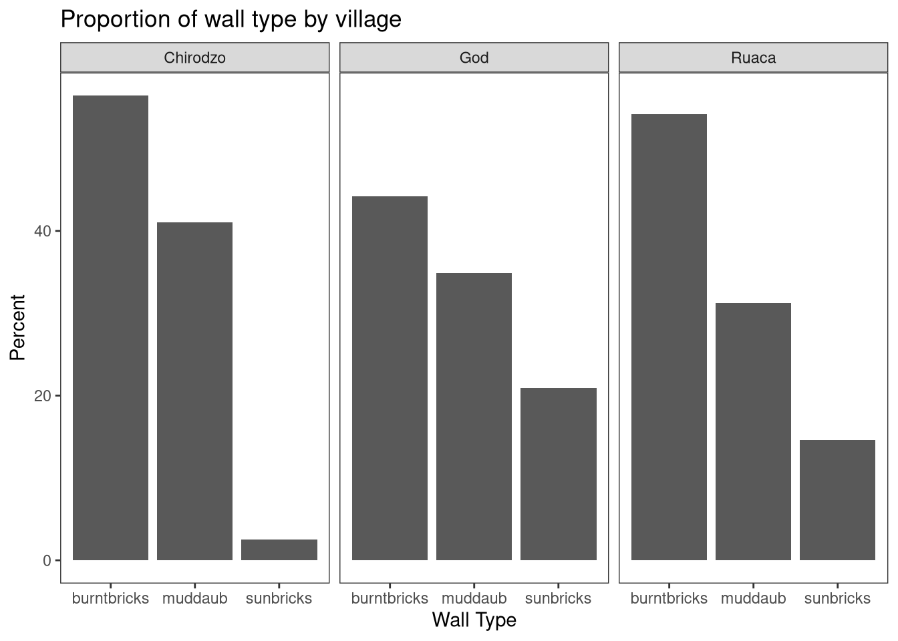
What if we wanted to see the proportion of respondents in each village who owned a particular item? We can calculate the percent of people in each village who own each item and then create a faceted series of bar plots where each plot is a particular item. First we need to calculate the percentage of people in each village who own each item:
percent_items <- interviews_plotting %>%
group_by(village) %>%
summarize(across(bicycle:no_listed_items, ~ sum(.x) / n() * 100)) %>%
pivot_longer(bicycle:no_listed_items, names_to = "items", values_to = "percent")To calculate this percentage data frame, we needed to use the across() function within a summarize() operation. Unlike the previous example with a single wall type variable, where each response was exactly one of the types specified, people can (and do) own more than one item. So there are multiple columns of data (one for each item), and the percentage calculation needs to be repeated for each column.
Combining summarize() with across() allows us to specify first, the columns to be summarized (bicycle:no_listed_items) and then the calculation. Because our calculation is a bit more complex than is available in a built-in function, we define a new formula:
~indicates that we are defining a formula,sum(.x)gives the number of people owning that item by counting the number ofTRUEvalues (.xis shorthand for the column being operated on),- and
n()gives the current group size.
After the summarize() operation, we have a table of percentages with each item in its own column, so a pivot_longer() is required to transform the table into an easier format for plotting. Using this data frame, we can now create a multi-paneled bar plot.
percent_items %>%
ggplot(aes(x = village, y = percent)) +
geom_bar(stat = "identity", position = "dodge") +
facet_wrap(~ items) +
theme_bw() +
theme(panel.grid = element_blank())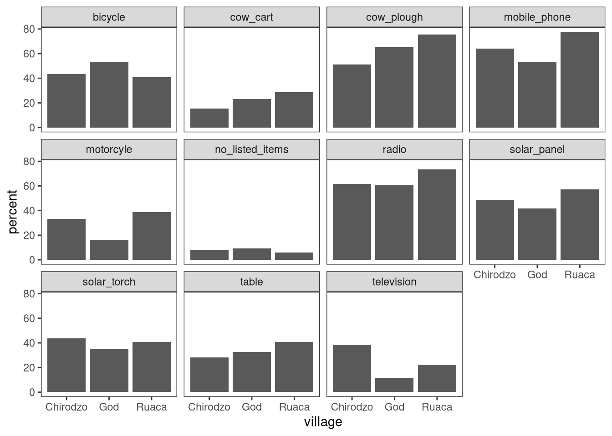
8.11 ggplot2 themes
In addition to theme_bw(), which changes the plot background to white, ggplot2 comes with several other themes which can be useful to quickly change the look of your visualization. The complete list of themes is available at https://ggplot2.tidyverse.org/reference/ggtheme.html. theme_minimal() and theme_light() are popular, and theme_void() can be useful as a starting point to create a new hand-crafted theme.
The ggthemes package provides a wide variety of options (including an Excel 2003 theme). The ggplot2 extensions website provides a list of packages that extend the capabilities of ggplot2, including additional themes.
8.12 Exercise
Experiment with at least two different themes. Build the previous plot using each of those themes. Which do you like best?
8.13 Customization
Take a look at the ggplot2 cheat sheet, and think of ways you could improve the plot.
Now, let’s change names of axes to something more informative than ‘village’ and ‘percent’ and add a title to the figure:
percent_items %>%
ggplot(aes(x = village, y = percent)) +
geom_bar(stat = "identity", position = "dodge") +
facet_wrap(~ items) +
labs(title = "Percent of respondents in each village who owned each item",
x = "Village",
y = "Percent of Respondents") +
theme_bw()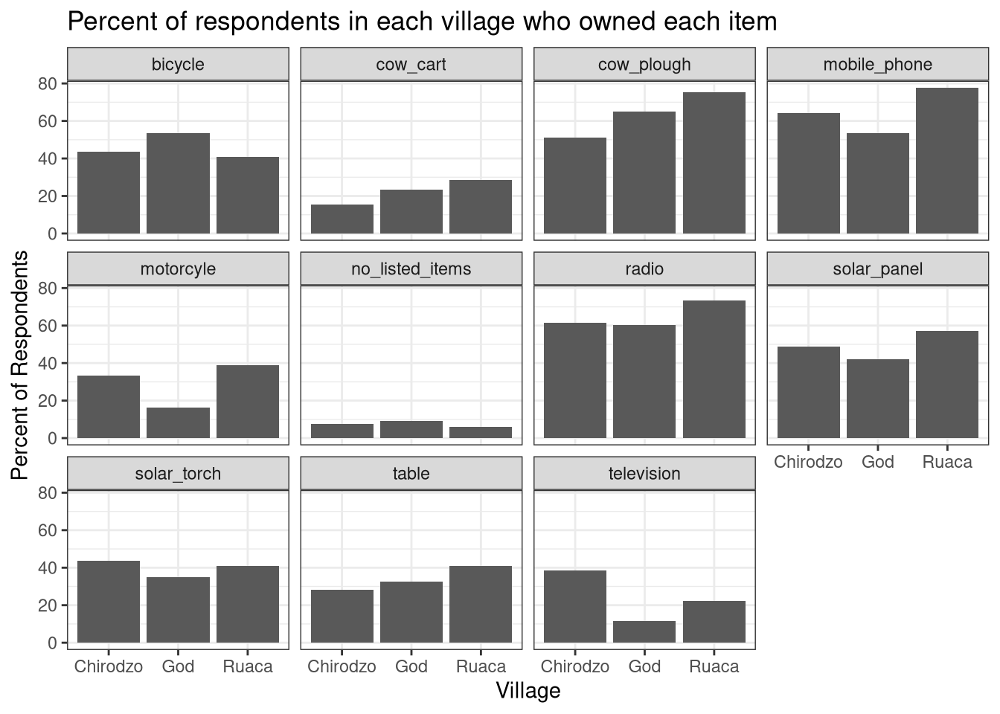
The axes have more informative names, but their readability can be improved by increasing the font size:
percent_items %>%
ggplot(aes(x = village, y = percent)) +
geom_bar(stat = "identity", position = "dodge") +
facet_wrap(~ items) +
labs(title = "Percent of respondents in each village who owned each item",
x = "Village",
y = "Percent of Respondents") +
theme_bw() +
theme(text = element_text(size = 16))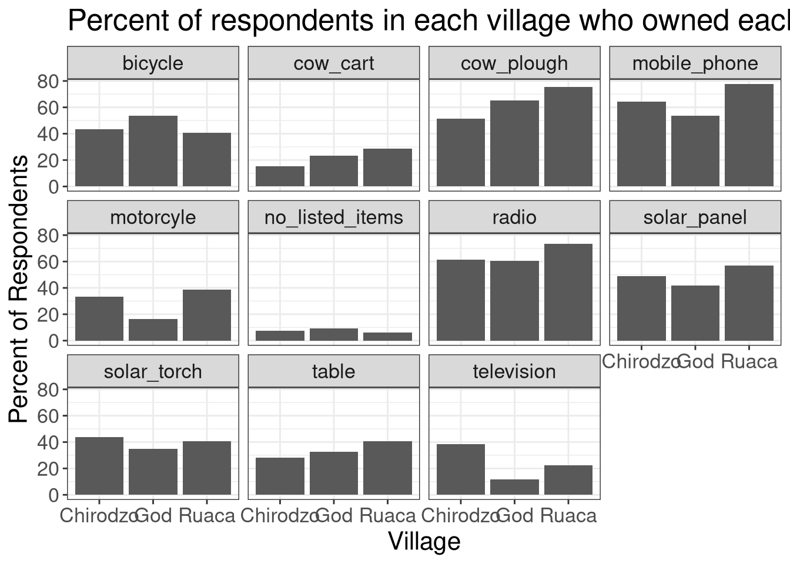
Note that it is also possible to change the fonts of your plots. If you are on Windows, you may have to install the extrafont package, and follow the instructions included in the README for this package.
After our manipulations, you may notice that the values on the x-axis are still not properly readable. Let’s change the orientation of the labels and adjust them vertically and horizontally so they don’t overlap. You can use a 90-degree angle, or experiment to find the appropriate angle for diagonally oriented labels. With a larger font, the title also runs off. We can add “\n” in the string for the title to insert a new line:
percent_items %>%
ggplot(aes(x = village, y = percent)) +
geom_bar(stat = "identity", position = "dodge") +
facet_wrap(~ items) +
labs(title = "Percent of respondents in each village \n who owned each item",
x = "Village",
y = "Percent of Respondents") +
theme_bw() +
theme(axis.text.x = element_text(colour = "grey20", size = 12, angle = 45,
hjust = 0.5, vjust = 0.5),
axis.text.y = element_text(colour = "grey20", size = 12),
text = element_text(size = 16))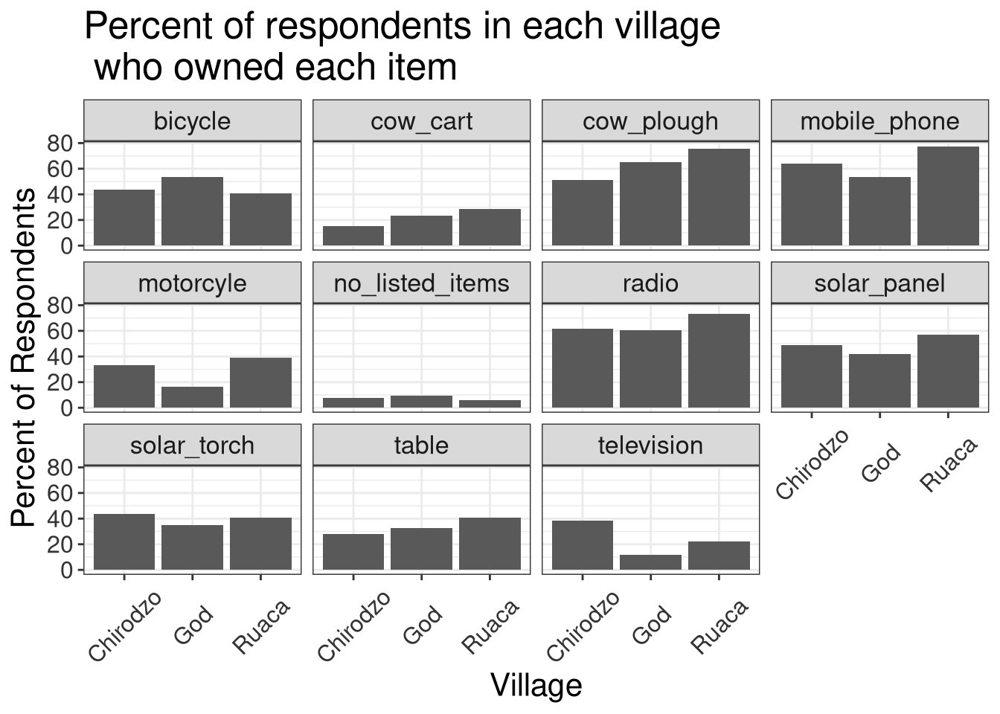
If you like the changes you created better than the default theme, you can save them as an object to be able to easily apply them to other plots you may create. We can also add plot.title = element_text(hjust = 0.5) to centre the title:
grey_theme <- theme(axis.text.x = element_text(colour = "grey20", size = 12,
angle = 45, hjust = 0.5,
vjust = 0.5),
axis.text.y = element_text(colour = "grey20", size = 12),
text = element_text(size = 16),
plot.title = element_text(hjust = 0.5))
percent_items %>%
ggplot(aes(x = village, y = percent)) +
geom_bar(stat = "identity", position = "dodge") +
facet_wrap(~ items) +
labs(title = "Percent of respondents in each village \n who owned each item",
x = "Village",
y = "Percent of Respondents") +
grey_theme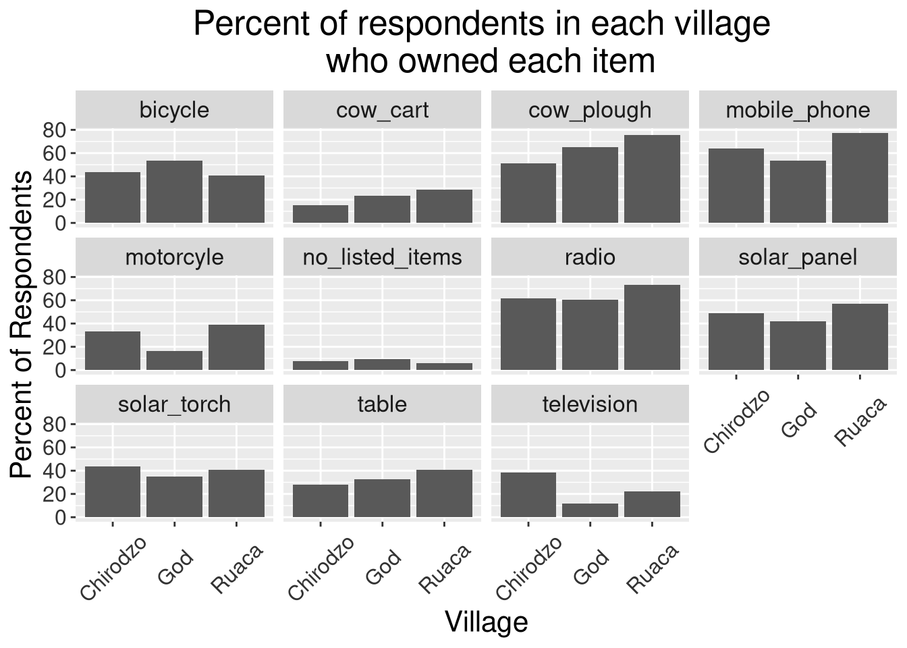
8.14 Exercise
With all of this information in hand, please take another five minutes to either improve one of the plots generated in this exercise or create a beautiful graph of your own. Use the RStudio ggplot2 cheat sheet for inspiration. Here are some ideas:
- See if you can make the bars white with black outline.
- Try using a different colour palette (see http://www.cookbook-r.com/Graphs/Colors_(ggplot2)/).
After creating your plot, you can save it to a file in your favourite format. The Export tab in the Plot pane in RStudio will save your plots at low resolution, which will not be accepted by many journals and will not scale well for posters.
Instead, use the ggsave() function, which allows you to easily change the dimension and resolution of your plot by adjusting the appropriate arguments (width, height and dpi).
Make sure you have the fig_output/ folder in your working directory.
my_plot <- percent_items %>%
ggplot(aes(x = village, y = percent)) +
geom_bar(stat = "identity", position = "dodge") +
facet_wrap(~ items) +
labs(title = "Percent of respondents in each village \n who owned each item",
x = "Village",
y = "Percent of Respondents") +
theme_bw() +
theme(axis.text.x = element_text(color = "grey20", size = 12, angle = 45,
hjust = 0.5, vjust = 0.5),
axis.text.y = element_text(color = "grey20", size = 12),
text = element_text(size = 16),
plot.title = element_text(hjust = 0.5))
ggsave("fig_output/name_of_file.png", my_plot, width = 15, height = 10)Note: The parameters width and height also determine the font size in the saved plot.
ggplot2is a flexible and useful tool for creating plots in R.- The data set and coordinate system can be defined using the
ggplotfunction. - Additional layers, including geoms, are added using the
+operator. - Boxplots are useful for visualizing the distribution of a continuous variable.
- Barplots are useful for visualizing categorical data.
- Faceting allows you to generate multiple plots based on a categorical variable.